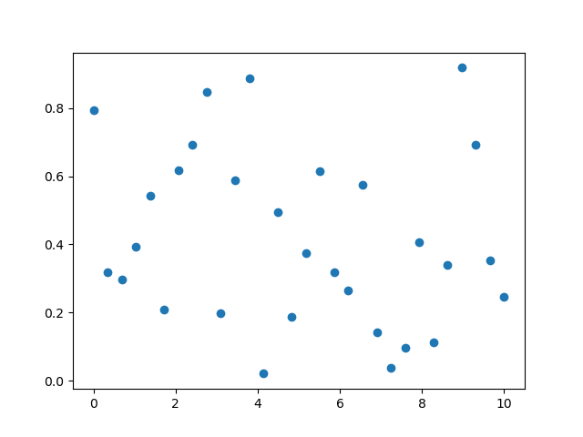

Session 2 — Number Crunching I: Arrays and Plots
We work with the Numpy package, and it's central data structure: Arrays. We also load the pyplot package to generate plots later.
import numpy as np import matplotlib.pyplot as plt
This loads the two packages and gives them the abbreviated names np and plt
respectively for easier use.
1. Arrays
Arrays are the central data structure in numpy. They make number crunching fast and efficient. Let's begin by creating some example arrays.
example_array_1 = np.array( [[1, 2, 3] ,[4, 5, 6]], dtype=float) example_array_2 = np.array( [[7,8,9] ,[10, 11, 12]], dtype=float) example_array_3 = np.array([1,2,3,4,5,6,7,8,9], dtype=float)
This creates three arrays. The first two have are two-dimensional with two rows and three columns respectively. The third is one-dimensional, i.e. it is a single line with nine entries.
When arrays have the same shape we can combine them using mathematical operations, and the elements in the corresponding positions will be combined. For example
print(example_array_1 + example_array_2) # [[ 8. 10. 12.] # [14. 16. 18.]] print(example_array_2 ** example_array_1) # x ** y means "x to the power of y" # [[7.000000e+00 6.400000e+01 7.290000e+02] # [1.000000e+04 1.610510e+05 2.985984e+06]] print(example_array_3 + example_array_1) # error, since the arrays have different shapes
A similar principle applies to combining an array and a number, but numbers are considered to be compatible with any shape. For example:
print(example_array_1 - 2) # [[-1. 0. 1.] # [ 2. 3. 4.]] print(example_array_3 - 2) # [-1. 0. 1. 2. 3. 4. 5. 6. 7.]
Numpy provides a variety of mathematical and statistical functions: They can be applied to individual numbers or to entire arrays:
print(np.max(example_array_1)) # computes the maximum # 6 print(np.exp(example_array_3)) # exponential function # [2.71828183e+00 7.38905610e+00 2.00855369e+01 5.45981500e+01 # 1.48413159e+02 4.03428793e+02 1.09663316e+03 2.98095799e+03 # 8.10308393e+03]
Other examples include np.log (the logarithm), np.min (minimum),
np.square, np.sqrt (square and square root) and np.sum (the sum).
The full list is online at:
Similarly, many statistical functions are provided:
print(np.mean(example_array_1)) # 3.5 print(np.var(example_array_3)) # variance # 6.666666666666667
Again, the full list is available online at
https://numpy.org/doc/stable/reference/routines.statistics.html
and includes functions for percentiles, correlation and others.
Indexing and Slicing
These are mechanics for accessing the individual elements of arrays,
or only some of the rows/columns.
To access and element, specify it by its position in the array:
Note that the count begins at 0 and not 1.
print(example_array_1[0, 1]) # 2.0 # access the element in the 1st row (number 0) # and second column (number 1). print(example_array_2[1, 2]) # 12.0 # access the element in the 2nd row (number 1) # and third column (number 2).
We can access multiple elements by specifying a start and end
position, separated by a colon (:).
When doing this, the start is included, but then end is not.
For example:
print(example_array_3[2:6]) # [3. 4. 5. 6.] # elements from position 2 (included) up to postion 6 (not included)
While this may be counter-intutitive at first, note that we get as many elements as the difference between the start and end positions: In the above example the start is 2 and the end is 6 and we get 6 - 2 = 4 numbers.
Omitting the start or end positions will cause the selection to begin at the start of the array/end at the end:
print(example_array_3[:4]) # [1. 2. 3. 4.] # four elements from the start print(example_array_3[4:]) # [5. 6. 7. 8. 9.] # all elements starting at the one in position 4
A negative number counts from the end of the array:
print(example_array_3[-2]) # 8.0 # second-to-last element print(example_array_3[-4:-1]) # [6. 7. 8.] # start at the fourth-to-last (included) and end at last (excluded)
2. Making a Simple Plot
We will briefly cover how to generate a simple plot with pyplot.
In this example we will make a scatter plot. First, let's generate values for our x-coordinate. We will generate 30 evenly spaced values from 0 to 10.
x_values = np.linspace(0, 10, num=30)
Since we don't have real data, lets generate some random numbers:
y_values = np.random.random(size=30)
scatter_data = { 'x': x_values, 'y': y_values }
and finally, generate a scatter plot, and display it:
plt.scatter('x', 'y', data=scatter_data) plt.show()
Let's explain what this does in more detail:
The last parameter data=scatter_data, means that we should retrieve
the relevant data for our plot from the scatter_data dictionary.
The first and second parameter contain the keys at which the x and y coordinates
should be looked up.
We could also have omitted the dictionary, and instead written
plt.scatter(x_values, y_values, data=scatter_data) plt.show()
The generated plot looks something like this:
